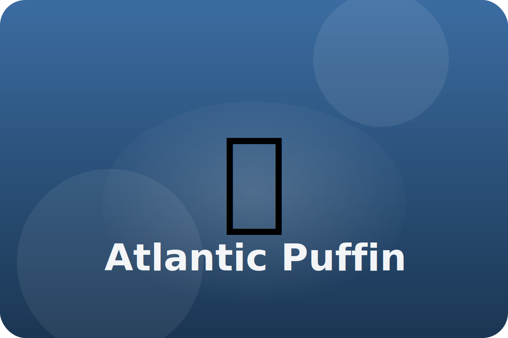

Tundra
Flying and swimming
Atlantic puffins nest in burrows on rocky cliffs. They dive into cold water to catch fish for their chicks.
Bright Beak
During spring, their beaks glow with color to attract mates, then shed the brightness in winter.
Underwater Wings
Puffins flap their wings underwater like flippers, steering through the sea.
Fish Basket
A spiky tongue and special mouth let them hold many fish at once for hungry chicks.
Keep exploring the Atlantic Puffin
Watch the Atlantic Puffin in action
Puffin Facts for Kids | Atlantic Puffins